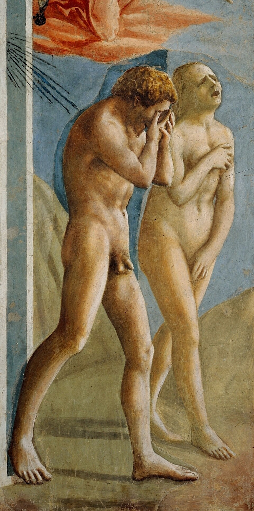

Adam and Eve — When Innocence Turns to Shame

Adam buries his face in his hands. His body remains exposed, but he shields himself from our gaze.Eve covers her body but leaves her face uncovered. Her open mouth gives her grief the force of a cryTheir feet press against the ground and their bodies cast shadows. Their suffering feels physical and real.Fig leaves were later painted over Adam and Eve’s nudity. They were removed during the restoration completed in 1990.
Why does this scene open a cycle of frescoes mostly about Saint Peter? Look at the gate on the far left. Adam and Eve have just passed through it, and every step takes them further away.
In Genesis, they become aware of their nakedness after eating the forbidden fruit. God sends them out of the garden and has its entrance guarded. In the chapel, this episode sets the story in motion. Christian viewers would have understood the departure from the garden as the moment sin and death entered human history. They could then read the healings and the return to life painted further along as answers to that first scene. Look back at the two figures. They leave the garden on foot, and Masaccio makes you feel every step.